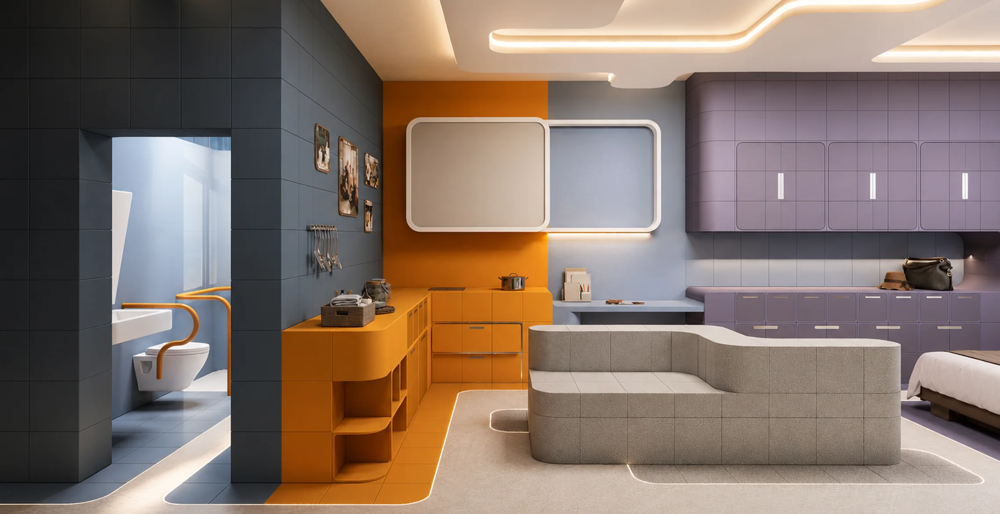
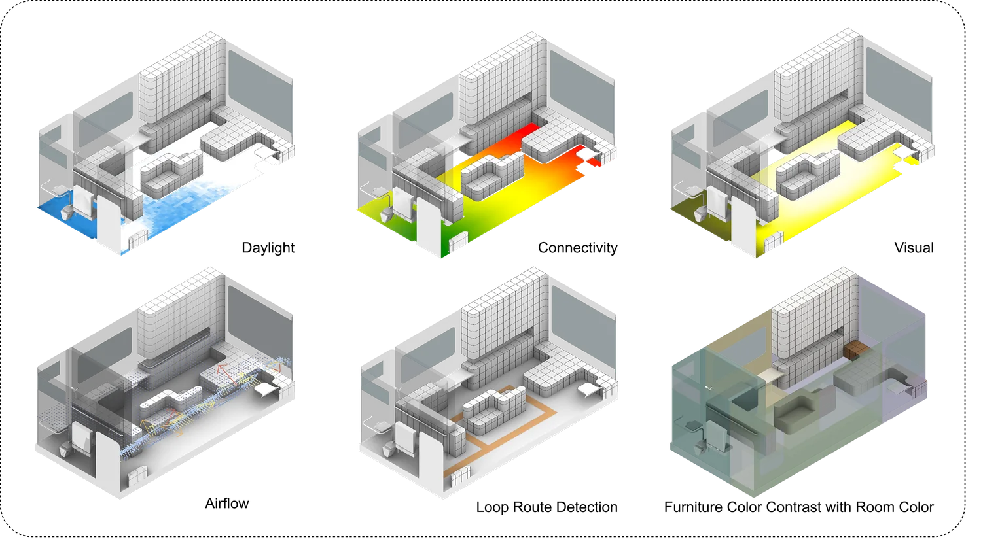
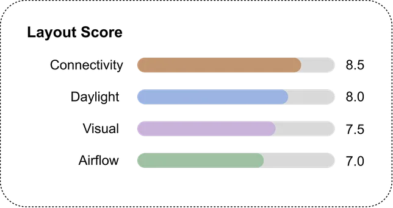

MEMORY ENTRANCE WALL
A personal wall of familiar photos, objects and soft light
greets him at the door, so home is recognised at once.
He forgets what he did a moment ago and loses track of where things are. Rooms stop
adding up to a place he knows, and routes and routines slip out of reach. The home has to
carry the memory for him, holding its shape so he does not have to rebuild it each time.

A personal wall of familiar photos, objects and soft light
greets him at the door, so home is recognised at once.
Visible storage and steady visual cues keep each routine
in one place, so he knows where to go and what is next.
A consistent colour logic marks each zone, building spatial
memory and cutting confusion in daily navigation.
A single continuous loop with no dead ends means he never
backtracks or faces a fork he has to solve.
Connectivity
8.5
Daylight
8.0
Visual
7.5
Airflow
7.0
8.2
LAYOUT SCORE (FULL = 10)
0.55 loop route + 0.45 colour contrast,
over a base of connectivity 40% · daylight
30% · visual 20% · airflow 10%
WHY THESE WEIGHTS
Memory is not about a single view, so the score is built differently. Two signature measures lead:
how well the plan forms one continuous loop, and how clearly colour separates the zones. Together
they carry the score, sitting on top of the usual four metrics where connectivity still matters most.
A looped, colour-coded home is one he can navigate from habit instead of memory.
Built on the three memory rules from Research: looped circulation, colour as memory cue, colour atlas.

